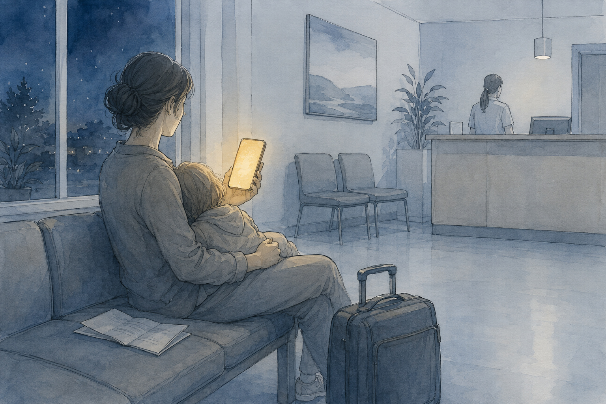
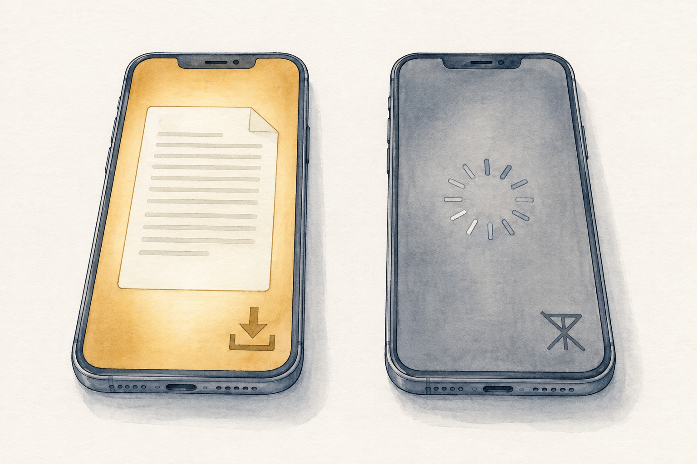

Travel Insurance Documents: What to Save Before You Go
Travel Document Vault

Key Takeaways
- Save your full policy document, policy number, and the 24-hour emergency contact line (not the sales number).
- Store copies offline and accessibly - email alone won't help when you're stranded or at a hospital.
- Pre-authorisation for medical treatment is required by most policies; skipping it may reduce or void your claim.
- Claims rejected most often due to missing documentation: police report for theft, original receipts, signed claim forms.
- Read your policy's key sections quickly by focusing on coverage limits, exclusions, and conditions.
Travel insurance matters most at the moment it is hardest to reach: a hospital desk abroad, a police station, an airline counter after a cancellation. What counts then is not the policy itself but whether the number, the insurer's 24-hour line and the proof of cover are within reach. This article covers what to save before departure, where to keep it so it opens without internet, and the claims errors that most often sink a payout.
What Actually Happens When You Need Your Insurance
It's 2 AM in Bangkok and you've got food poisoning and a fever. The hotel reception desk recommends a private clinic, so you call to ask about costs, but they ask for your insurance details instead. You scramble through your phone for the policy number. Then you remember: it's in an email you can't open, because the phone won't connect to WiFi. The clinic staff say they need that number before they can start treatment and get pre-authorisation from your insurer.
A few missing documents are not just inconvenient here. They decide whether treatment starts immediately, whether you pay out-of-pocket and claim it back later, or whether the claim gets rejected altogether.
Travel insurance only works if you can access it when you need it. Most people store it in email and cannot find it when crisis hits - usually during stress, time pressure, or a medical emergency.
The Five Documents You Must Save Before You Fly
Your travel insurance policy is typically a PDF. That one file contains everything you need, but you should extract and save these five things separately so you can find them instantly:
- Full policy document (the PDF)
- Policy number (extract it - write it down separately too)
- 24-hour emergency contact line (different from the sales or customer service number)
- What is covered section (coverage limits for medical, baggage, cancellation, etc.)
- Key exclusions and conditions (including pre-authorisation requirements)
The policy number is critical. Many insurers' phone systems require it before routing you to a live person. If you cannot provide it, you will waste time hunting through documents while the clock ticks.
The emergency line is different from the customer service line, which typically only answers during business hours, while the emergency line runs 24/7. Save both, but know which one to call in the middle of the night when you're injured.
Where to Store Them So You Can Actually Access Them
Email is not a storage system for travel documents. It depends on a connection, and a crisis rarely comes with one. Stranded, injured, or sitting in a hospital, you often have no WiFi and no working data. Your phone's battery might be low. You might be in a country where your data plan does not work.
Instead, store your documents in three places for redundancy.
Offline on Your Phone
Download the PDF directly to your phone and save screenshots of critical information (policy number, emergency line). Many security-focused note apps or document storage apps let you save files offline so they are accessible even with no internet. Your phone's native Files app or Photos app both work fine for this.
Many travellers also take screenshots of their policy's first page (with the policy number) and their emergency contacts page, then keep these images in a dedicated folder. When crisis hits, you can find this folder in 5 seconds.
Cloud with Offline Access
For backup, save your insurance documents to a password-protected cloud drive (iCloud, Google Drive, OneDrive), but download them for offline viewing. This gives you a backup if your phone gets lost.
Physical Copy with Your Travel Documents
Store a physical copy - or a high-quality photo of the critical pages - alongside your passport, visa documents, and other travel papers. If your phone dies, this is your fallback.
A handwritten card does the job as well as a printout: policy number, insurer name, emergency line. Tuck it into the passport wallet and it survives a flat battery, a lost phone, and a hotel safe you cannot open.

Document Storage Comparison
| Storage Location | Access Without Internet | In an Emergency | Backup if Phone Lost |
|---|---|---|---|
| Phone (offline download) | Instant, no WiFi needed | Available immediately - fastest option | Lost with phone unless backed up |
| Cloud drive with offline access | Yes, if downloaded previously | Depends on local cache; works if phone has cached the file | Recoverable on a replacement phone with login |
| Requires internet connection | Unreliable - you may not have signal or data | Still accessible but time-consuming to search | |
| Physical copy (laminated card or printout) | Yes, always accessible | Fastest if your phone is dead or lost | Lost if passport is lost; keep in separate pocket |
| Encrypted app (e.g. Travel Document Vault) | Yes, stored locally on phone | Instant access, designed for this scenario | Encrypted and private; cloud backup optional |
Travel Document Vault stores scans of your passport, visa, insurance policy, and other documents offline - fully encrypted and completely private. There's no cloud account and by default nothing syncs to a server, so everything stays on your device, reachable even without internet. It's a one-time purchase on the App Store or Google Play, with no subscription.
Common Claims Mistakes and How to Avoid Them
Even if you have your documents accessible, you can still lose your claim if you mishandle the process. The most common rejection reasons are:
Medical Claims: You Did Not Get Pre-Authorisation
Most travel insurance policies require pre-authorisation before treatment. This means calling your insurer and getting approval before you visit a hospital or clinic. Requirements vary by insurer and policy type - check your specific policy's medical treatment section. If you skip this step and pay out-of-pocket, you will often get rejected with "treatment was not pre-authorised." Many insurers will not reimburse without pre-authorisation, even if the treatment was necessary and covered.
Say you're hospitalised with appendicitis in Mumbai. The hospital needs payment upfront or a guarantee from your insurer, and you've got a two-hour window before surgery. Without your insurer's pre-authorisation number, the hospital demands cash. That leaves two bad options: pay now and risk a rejected claim months later, or delay surgery while you chase your insurer. One call avoids all of it. With a confirmation number in hand, the hospital bills your insurer directly.
Action: Before any treatment, call the emergency line on your policy and give them the hospital or clinic details. They will either tell you it is covered and pre-authorise it, or tell you which facilities they work with in that country. It's ten minutes on the phone, against a hospital bill you might otherwise be stuck with.
Baggage Claims: You Have No Police Report
If your bag is stolen, lost, or damaged, most policies require a police report from the airport or local station. Insurers use this as proof. Check your policy's "How to Make a Claim" section for exact requirements, as these vary by insurer. If you skip reporting to police and only file with the airport, many insurers reject claims because there is no official crime report. For theft or loss (not simple damage), a police report is typically mandatory.
Action: If your bag goes missing, report it to the airport lost and found desk. If it's theft, file a police report the same day, and get a copy to send with your claim.
All Claims: You Do Not Have Receipts or Proof
Insurance reimburses based on what you can prove. If you buy a replacement phone after yours gets damaged, keep the receipt. The same applies to a last-minute hotel after a cancelled flight (keep the booking confirmation and payment receipt) or to medical treatment (keep the invoice and prescription).
Keep every receipt, physical originals and digital copies both. Photograph the paper ones as backup, and make sure you can still retrieve an emailed receipt months later.
Cancellation Claims: You Did Not Read the Fine Print
Travel insurance covers trip cancellation only if you cancel for a specific covered reason, which varies by insurer. That typically means illness, injury, or the death of a family member. It rarely means cold feet, a change of mind, or bad weather, unless the weather grounds your transport. If you cancel because the flight price dropped, most policies will not cover you. How generous your insurer is about this varies a lot, so it's worth reading the "trip cancellation" section closely before you assume you're covered.
Action: Before cancelling, check your policy's coverage details. If you think your reason qualifies, call your insurer before cancelling your flight. Get written confirmation of coverage from them before proceeding.
How to Read Your Policy and Find What Matters
Travel insurance policies can run to dozens of pages depending on your insurer and policy type. You do not need to read everything. Every policy should contain the sections below, though where they sit varies by insurer.
| Section | What It Tells You | Why It Matters |
|---|---|---|
| Coverage Summary or Schedule | Payout limits for medical, baggage, cancellation, and the rest | Know your maximum claim amount for each type of loss |
| Exclusions | What is not covered (pre-existing conditions, high-risk sports, etc.) | Avoid making claims that are definitely rejected |
| Medical Conditions | Any restrictions on coverage for health issues | Check if your conditions are covered |
| How to Make a Claim | Process, timeline, required documents, contact details | Know exactly what to do when you need to claim |
| Emergency Assistance | How to get help 24/7, what is included (repatriation, translation, etc.) | Know who to call in a crisis and what they will do |
Use the table of contents to find these sections without reading every page. Highlight the coverage limits and the exclusions, then screenshot those pages for quick reference.
Before You Leave: A Simple Preparation Checklist
Here is what to do before your flight:
- Download your insurance policy PDF to your phone
- Screenshot the policy cover page (with policy number) and emergency contacts page
- Save both to a folder on your phone with a label you will recognise at a glance (something like "Insurance - this trip")
- Write down or memorise your 24-hour emergency contact number
- Read the "How to Make a Claim" section so you know the process if needed
- Store a physical backup (printed copy or handwritten note with policy number and emergency line)
- Save a copy to a cloud drive (OneDrive, Google Drive, iCloud) with offline access enabled
Twenty minutes now, and you won't be searching for any of it in a crisis.
Before you rely on this: it's a blog, not an official source. Rules and details change, and your situation may be different. We check what we publish, and we can still be wrong or out of date. If something here matters to your plans, confirm it with the authority that handles it before you act.
Frequently Asked Questions
Do I need to carry my physical insurance policy when I travel?
No, you don't need the physical document in paper form. A digital copy on your phone or a photo is sufficient. Most insurers and hospitals accept a digital copy or just your policy number. However, a physical backup (photocopy or printout) is wise in case your phone dies. Even simpler: write your policy number and emergency line on a card with your passport.
What should I do if I cannot reach my insurance company's emergency line abroad?
Travel insurance emergency lines typically accept international calls globally. Check your policy for an alternative number for calls from outside the insurer's home country. If you can't reach them, proceed with treatment and save every receipt and piece of paperwork. Call them as soon as you can, and check your policy for its claim deadline. Be aware that proceeding without pre-authorisation may reduce your claim or cause denial, so always try to reach them first.
What should I do if I lose my insurance policy while travelling?
If you have your policy number and can call your insurer's emergency line, that's all you need. Provide your policy number and personal details by phone and they'll confirm your coverage. If you've stored backups (digital photos, cloud copies, or written notes), use those. Most insurers keep records and can resend your policy immediately.
What sections of a travel insurance policy do I actually need to read?
Focus on: coverage summary or schedule (your payout limits), exclusions (what's not covered), medical conditions restrictions, how to make a claim (process and deadline), and emergency assistance (24/7 contact and what's included). Use the table of contents to find these sections without reading every page. Highlight coverage limits and exclusions, then screenshot those pages for quick reference.
Does travel insurance work in every country I travel to?
Travel insurance protects you in most countries worldwide during your trip, but some policies exclude certain destinations, regions, or activities. Check your policy's geographic coverage section for any exclusions. As long as your destination isn't explicitly listed as excluded, your policy covers you there regardless of which country issued the policy. High-risk activities (mountaineering, professional sports) may have separate exclusions.